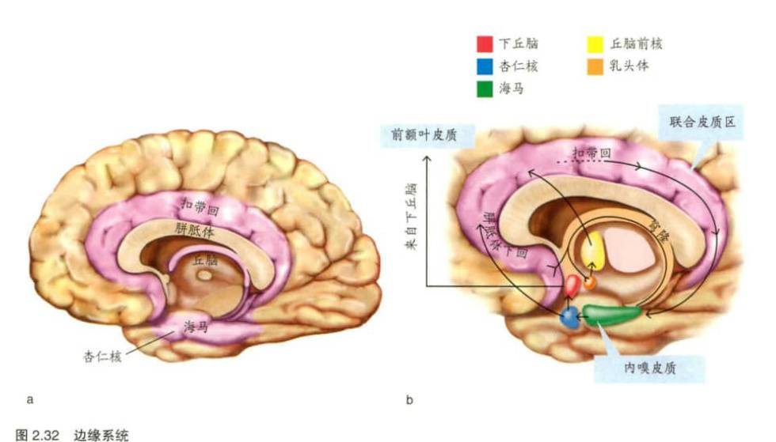

长时记忆可以划分为陈述性记忆和非陈述性记忆，陈述性记忆分为情景记忆和语义记忆
内侧颞叶记忆系统包括颞叶中的海马以及周围的内嗅皮质、鼻周皮质和海马旁皮质
当大鼠位于空间特定位置或特定方向时，海马中被激活的神经元是位置细胞，其为海马拥有编码场景信息的细胞提供了证据
项目——场景联结模型
鼻周皮质表征特定的项目信息（如‘谁’，‘是什么？’）海马旁皮质表征项目发生时的情景信息（如时间和地点），而海马内的加工将对项目的表征与其场景表征联结在一起
拉里斯夸尔的标准巩固理论认为新皮质在被完全巩固的长时记忆储存中起着重要作用，而海马仅发挥暂时性作用
多重痕迹理论
语义记忆长时存储依赖新皮质
情景记忆提取依赖海马，每次提取形成记忆痕迹，不同记忆痕迹的公共元素成为要点信息作为语义记忆储存在新皮质其他区域
什么是联结问题
大脑究竟是如何将所有信息捆绑在一起的？
Hebbian learning /赫布学习
唐纳德·赫布提出的学习机制理论，指当一个强输入和一个弱输入同时作用于一个细胞时，这个细胞的弱突触连接会增强。
iconic memory /映像记忆
参见感觉记忆（sensory memory）。
long-term potentiation (LTP) /长时程增强
当某些类型的突触刺激（如长时间的高频输入）导致突触传递强度长期增加时，突触连接得到增强的过程。
在海马体内的一种神经通路中，存在着一系列短暂的高频动作电位，能使该通路的突触强度增加，这种强化称为长时程增强（LTP）作用。这种LTP具有专一性，它只对受到刺激的通路起强化作用。这种作用使海马体能对新习得的信息进行长时间的加工，然后再把这种信息传输到大脑皮层相关的部位，做更长时间的存储。进一步研究显示，海马体是长时记忆的暂时性储存场所，海马体受到损伤就会影响短时记忆向长时记忆的转化。
memory /记忆
将学习内容保持在一种以后可以提取的状态。
记忆，是在人的头脑中积累和保存个体经验的心理过程，是一种积极、能动的活动，对外界信息的接受有选择性，依赖于人已有的知识结构，是保存个体经验的形式之一。从信息加工（认知）角度包括对信息的编码、储存和提取过程。
priming /启动
由之前出现的刺激或状态引发行为改变或生理反应的一种学习形式。启动通常指在短时间内发生的变化。例如，听到“河”这个词会启动“水”这个词。
relational memory /关系记忆
把个别信息与特定记忆相关联并支持情节记忆的记忆。
retrieval /提取
使用存储信息产生一个意识表征，或执行一个习得行为（如动作）。比较编码（encoding）。
long-term memory /长时记忆
从几小时到几天或几年的长时间保持信息的记忆。比较感觉记忆（sensory memory）和短时记忆（short-term memory）。
信息经过充分和有一定深度的加工后，在头脑中长时间保存下来。长时记忆的保持时间很长，在一分钟以上，甚至到终生。容量没有限制。
perceptual representation system (PRS) /知觉表征系统
非陈述性记忆的一种形式。在知觉系统中运行，关于物体和单词的结构和形状能够被先前经验启动并在之后的内隐测验中被提取出来。
procedural memory /程序性记忆
非陈述性记忆的一种形式，包括学习各种运动技能（如怎样骑自行车）和认知技能（如怎样阅读）。
short-term memory /短时记忆
在几秒至几分钟之内保持信息的记忆。参见工作记忆（working memory）。比较感觉记忆（sensory memory）和长时记忆（long-term memory）。
外界刺激以极短的时间一次呈现后，感觉信息保持的时间在1分钟左右的记忆叫短时记忆。
TGA
参见短暂性全面遗忘症（transient global amnesia）。
echoic memory / 声象记忆
参见感觉记忆 (sensory memory)。
encoding / 编码
将输入信息进行存储的过程。编码由两个阶段组成：获取和巩固。比较提取 (retrieval)。
episodic memory / 情景记忆
一种陈述性记忆，存储有关个人生活事件的自传体信息。比较语义记忆 (semantic memory)。
implicit memory /内隐记忆
参见非陈述性记忆（nondeclarative memory）。
classical conditioning / 经典条件反射
也称巴甫洛夫条件作用（Pavlovian conditioning）。条件刺激（一个针对某一机体的中性刺激）与无条件刺激（针对某一机体产生既定反应的刺激）配对并与之关联的一种联想性学习。在条件刺激与无条件刺激配对后，条件刺激会引发条件反应，类似于无条件刺激引起的无条件反应。比较非联想学习（nonassociative learning）。
经典性条件作用：一个新刺激替代另一个刺激与一个自发的生理或情绪反应建立联系。
dementia / 神经认知障碍
超出正常老化预期的认知功能 (包括记忆) 丧失。
nonassociative learning /非联想学习
一种不涉及两种刺激之间的联系以引起行为变化的学习。它包括习惯化和敏感化等简单的学习形式。比较经典条件作用（classical conditioning）。
nondeclarative memory /非陈述性记忆
也称内隐记忆（implicit memory），指人们通常无法有意识地提取的知识，如运动和认知技巧（程序性知识）。例如，骑自行车就是非陈述形式的记忆。虽然我们可以描述动作本身，但骑自行车实际所需的知识并不容易被描述出来。比较陈述性记忆（declarative memory）。
Pavlovian conditioning /巴甫洛夫条件反射
参见经典条件反射（classical conditioning）。
PRS
参见知觉表征系统（perceptual representation system）。
Ribot's law /里博定律
参见时间梯度（temporal gradient）。
semantic memory /语义记忆
陈述性记忆的一种形式，存储与个人所学习事实相关的知识，而不是存储和学习时的背景相关的知识。比较情景记忆（episodic memory）。
语义记忆是指对一般知识和规律的记忆，与特殊的地点、时间无关，较少受外界因素的干扰，因而比较稳定。例如，记住化学公式、乘法规则。
storage /存储
获得（创造）和巩固（保持）信息而产生的长时信息记录。
amnesia / 遗忘症
脑损伤或脑疾病后引起的学习和记忆能力缺陷。
declarative memory / 陈述性记忆
也称外显记忆 (explicit memory), 指我们能够有意识地提取的有关个人和世界的知识 (事件和事实)。陈述这个词表明我们可以表述这种知识，并且在大多数情况下能够意识到我们拥有这种知识。比较非陈述记忆 ( nondeclarative memory )。
陈述性记忆是指对有关事实和事件的记忆，可以通过语言传授而一次性获得，提取往往需要意识的参与。例如，教材上的知识、日常生活常识、抽象命题等。
temporal gradient /时间梯度
也称里博定律（Ribot's law），指某些逆行性遗忘症病人对最近发生事件的遗忘最严重的现象。
temporally limited amnesia /短暂性遗忘症
一种因脑损伤导致的逆行性遗忘症，以大脑损伤为起点，对之前的信息发生遗忘。但这种遗忘不是影响整个生命阶段，而是影响一部分时间。
transient global amnesia (TGA) /短暂性全面遗忘症
一种突发的、戏剧性的且短暂的（仅持续数小时）顺行性和逆行性遗忘。
working memory /工作记忆
一种容量有限的存储系统，用于在短期内保存（保持）信息和对存储内容进行心理操作。参见短时记忆（short-term memory）。
工作记忆是指在信息加工过程中，对信息进行暂时存储和加工的、容量有限的记忆系统；工作记忆是一种当前工作状态的记忆，还要对这些信息进行加工。常用阅读广度测验来测量工作记忆容量。
consolidation / 巩固
记忆表征随时间的推移而增强的过程，被认为涉及参与信息存储的大脑系统的改变。
explicit memory
参见陈述性记忆（declarative memory）。
LTP
参见长时程增强（long-term potentiation）。
sensory memory /感觉记忆
感觉信息的短暂保持，时间在几毫秒到几秒之间。例如，当我们并未特别刻意去听某个人讲话时，我们仍然可以记起这个人刚刚所说的话。听觉的感觉记忆叫作声像记忆（echoic memory），视觉的感觉记忆叫作图像记忆（iconic memory）。比较短时记忆（short-term memory）和长时记忆（long-term memory）。
外界刺激以极短的时间一次呈现后，感觉信息保持的时间在1秒钟左右的记忆叫瞬时记忆，又叫感觉记忆或感觉登记。视觉的感觉记忆叫图像记忆；听觉的感觉记忆叫声像记忆。
retrograde amnesia /逆行性遗忘症
对过去发生事情的记忆丧失。比较顺行性遗忘症（anterograde amnesia）。
hippocampus (复数: hippocampi)/海马
位于内侧颞叶的一个分层结构，通过周围
颞叶皮质接收许多
大脑皮质的
信息输入，并把信息传递到
皮质下的
目标区域，负责
记忆和
学习功能，尤其是哺乳动物的空间位置记忆和人类的情景记忆。
